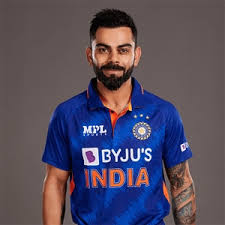

Virat Kohali
1988-Present
""Virat Kohli: The King of Consistency and Passion in Cricket!"
Virat Kohli born on 5 November 1988 is an Indian international cricketer who plays Test and ODI cricket for the Indian national team. A former captain in all formats of the game, Kohli retired from the T20I format following India's win at the 2024 T20 World Cup. He's a right-handed batsman and an occasional unorthodox right arm quick bowler. Kohli holds the highest IPL run-scorer record, ranks third in T20I, third in ODI, and stands the fourth-highest in international cricket. Regarded as one of the greatest batsman of all time, he also holds the record for scoring the most centuries in ODI cricket and is second in the list of most international centuries scored in international cricket.
Biographies
- "Driven: The Virat Kohli Story"
- "Virat: The Making of a Champion"
- "Virat Kohli: Reliable Rebel"
- "Winning like Virat: Think & Succeed like Kohli"